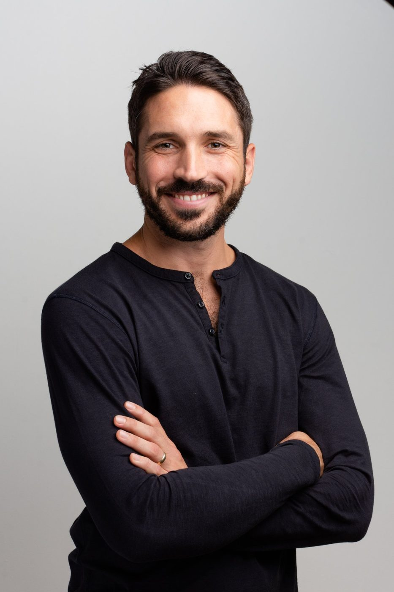

Steady under pressure
Notice your patterns, navigate difficult conversations, and make choices with greater clarity.
For founders and senior leaders carrying a lot of responsibility, who want to meet the demands of leadership while being more present for the life they are building.
Explore the partnership
People look to you for direction. Decisions carry weight. And when the workday ends, there are people you love who need your presence, too.
You may be succeeding professionally while feeling stretched at home. Your own health, energy, or sense of purpose may have slipped to the margins. You want to show up more fully, without turning your life into another performance target.
Notice your patterns, navigate difficult conversations, and make choices with greater clarity.
Explore how you listen, communicate, and bring your attention to the person beside you.
Choose the kind of parent you want to be and make room for moments of real connection.
Reconnect with the habits, boundaries, and sources of energy that help sustain your life.
We begin with your real life. Together, we identify what matters most and bring the work into the conversations, decisions, and everyday moments where change takes shape.
An initial guided life-and-leadership assessment helps you reflect on what is working, where pressure spills over, and what you want to change. We explore your values, relationships, responsibilities, and wellbeing together.
A reflective coaching process, not a diagnostic test or a score of your worth.
We translate that awareness into a focused 90-day plan with two or three meaningful commitments. You define what progress looks like in the areas that matter most to you.
A living plan, revisited as your priorities and circumstances evolve.
Regular coaching gives us space to work with what is actually happening. Between sessions, you practice, reflect, and notice. We use those experiences to deepen the work and refine your next steps.
Depth, honest reflection, and accountability that supports your own agency.
This is a personal engagement built around your context. The structure creates continuity; our conversations stay responsive to what is most alive and important for you.
An initial guided assessment and conversation to orient the work around your leadership, relationships, family, and wellbeing.
Dedicated one-to-one time to explore patterns, work through challenges, and deepen the way you show up.
Two or three priorities, practical commitments, and regular reflection on what is changing.
A way to share reflections and questions as you apply the work. We agree on response windows and boundaries before beginning.
We are exploring a personalized companion dashboard: a simple place for your priorities, commitments, reflections, and reminders between sessions.
The intention is to help you notice meaningful patterns and bring them into our conversations, without adding more noise to your day.
This illustration shows a possible experience. A working dashboard is not yet available; features and access would be confirmed separately.
Your 90-day intention
Bring more presence to the people and decisions that matter.
Notice what is happening before choosing how to respond.
Choose a small practice that helps you leave the workday behind.
Make room for one commitment that supports your energy.
A moment to reflect
When did I feel most like the person I want to be this week?
Example content only. Your priorities and commitments would be chosen together.
Time to move beyond a single insight and explore how you live it. We begin with a conversation about your context, your hopes, and whether this is the right partnership for you.
USD · Six months · $12,000 total
Includes the initial assessment, twice-monthly coaching, a rolling 90-day plan, and agreed between-session support.
Begin the conversationDraft offer for review. Final scope, scheduling, support boundaries, and payment terms would be agreed before enrollment. No payment is collected on this page.
No. We keep your whole life in view, then choose the priorities that matter most to you. That may mean focusing deeply on one or two areas rather than trying to change everything at once.
Guided reflection and a coaching conversation about your current experience, values, priorities, and patterns. It is a starting point for awareness and direction, not a validated psychological assessment or a clinical diagnosis.
WhatsApp gives us a way to stay connected to the work between sessions. We would agree on response windows, communication boundaries, and any arrangements for additional sessions before the engagement begins.
The dashboard shown here is a proposed concept, not a functioning client application. We would confirm any future features, privacy arrangements, availability, and inclusion before you rely on them.
No. This is individual coaching focused on awareness, choices, and follow-through. It does not replace mental-health care, couples therapy, medical advice, or other specialist support.
Let's talk about the life you are leading, what you want to create, and what support would make a meaningful difference.
Begin the conversation